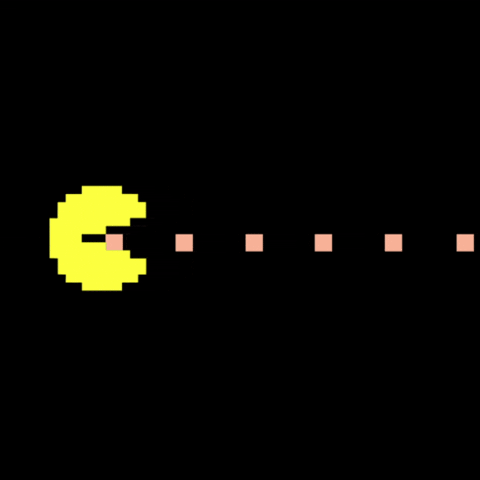

Computer Science student and Software Developer passionate about creating efficient, impactful solutions.

I am a Computer Science student with a strong interest in software development and problem-solving. I take a structured approach to learning and coding, with a focus on writing clean, scalable, and maintainable code. This includes exploring hypothetical skills and enjoying applying them to real-world challenges that enhance my understanding of modern software engineering practices.
June 2025 - August 2025
During my internship at AVEVA, I focused on enhancing the E3D Industrial software suite, focusing on optimizing data queries and reliability. Software involved designing and implementing new features within the platform's core services using C# and SQL, resulting in a 15% reduction in query latency. I contributed to a complete software development lifecycle, from initial design through testing and deployment.
November 2025 - Present
A university-level project focused on creating a machine learning feature analytics model to predict and analyze Formula 1 races. The model utilizes deep learning techniques to ingest real-time telemetry data and historical race results, providing strategic insights into pit-stop timing and tire wear. This project involved complex data transformation and visualization using React for the front-end dashboard.
September 2025 - November 2025
Created a 2D game using Java and the Swing library to implement core functionalities such as collision detection, enemy AI, and state management. The project served as a foundational exercise in object-oriented programming (OOP) principles and low-level game loop architecture, demonstrating proficiency in desktop application development.